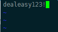

1 环境
| 操作系统 | Centos7.1 511 |
| 主服务器 | 172.20.20.111 |
| 从服务器 | 172.20.22.99 |
| 测试目的：实现主服务器/rsync目录与从服务器/rsync目录实时双向同步。 | |
| 参考资料： http://blog.sina.com.cn/s/blog_9f4962b10102vqua.html http://402753795.blog.51cto.com/10788998/1713179 | |
2 以下操作主从服务器都要操作
2.1 关闭selinux
1 | vi /etc/selinux/config #编辑防火墙配置文件 |
2.2 开启防火墙tcp 873端口（Rsync默认端口）
1 | [root@server1 ]# firewall-cmd --zone=public --add-port=873/tcp --permanent |
主服务做rsync服务端，从服务器做客户端
3 安装rsync（服务端）
1 | Yum install rsync |
3.1 编辑配置文件
1 | Vi /etc/rsyncd.conf |
3.2 配置密码文件
密码文件为配置文件中所写的文件/etc/rsyncd.secrets格式为**账户:密码**
1 | [root@server1 ]# vi /etc/rsyncd.pass1 |
输入帐号密码（自定义）
3.3 修改配置文件及密码文件权限(必须600)
1 | chmod 600 /etc/rsyncd.conf |
3.4 检查rsync是否启动
1 | # lsof -i :873 |
4 配置从服务器(客户端)
4.1 设定密码文件
配置密码文件 (注：为了安全，设定密码档案的属性为：600。rsync.pass1的密码一定要和Rsync 服务器端/etc/rsyncd.pass1的设定的密码一样)
1 |
密码文件可与服务端密码文件不一样，这里为了便于记忆，都设置为rsyncd.pass1

客户端密码文件只输入密码，不输入帐号。
4.2 赋予600权限
1 | chmod 600 /etc/rsyncd.pass1 # 必须修改权限 |
4.3 测试
1 | $ rsync -avzP --password-file=/etc/rsyncd.pass1 /opt/liferay/data/ tongbu@172.20.20.111::liferay1 |
从客户端同步/rsync目录到服务端
4.4 安装sersync
下载地址：https://code.google.com/archive/p/sersync/downloads
下载sersync2.5.4_64bit_binary_stable_final.tar
4.4.1 解压
1 | Tar –xvf sersync2.5.4_64bit_binary_stable_final.tar |
解压文件到/usr/local,重命名为serync
4.4.2 修改配置文件
1 | Vi /usr/local/serync/confxml.xml |
1 | xml version="1.0" encoding="ISO-8859-1" |
1 | 修改的代码如下: |
4.4.3 创建日志文件
1 | Vi /usr/local/serync/ rsync_fail_log.sh |
4.4.4 启动sersync
1 | /usr/local/sersync/sersync2 -d -r -o /usr/local/sersync/confxml.xml |
此时客户端可以实施同步目录文件到服务端了。
5 实现双向同步
把主从服务器角色互换，从服务器作为服务端，主服务器作为客户端重新部署一次，这样就可以双向实时同步了。